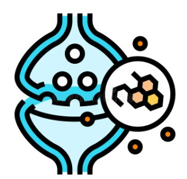

Functions of Amino Acids
Amino acids play crucial roles in various biological processes. Here’s an overview of their key functions:
Key Functions of Amino Acids
| Function | Description |
|---|---|
 Protein Synthesis Protein Synthesis |
Amino acids are fundamental to the process of protein synthesis, which is crucial for life. Proteins, composed of long chains of amino acids, are essential macromolecules that perform a vast array of functions within living organisms. During protein synthesis, amino acids are sequentially linked together through peptide bonds, forming a polypeptide chain. This chain then folds into a specific three-dimensional structure, determining the protein's function. Proteins play a critical role in maintaining cell structure, facilitating biochemical reactions, and regulating various biological processes. They are integral to the formation of cellular components, such as enzymes and structural proteins, and are involved in signaling pathways that control cell growth and differentiation. |
| Enzyme Activity | Enzymes are specialized proteins that act as biological catalysts, accelerating chemical reactions that are vital for life. Amino acids are indispensable in the formation and functionality of these enzymes. The unique sequence and arrangement of amino acids in an enzyme create a specific active site that binds to substrates and facilitates their transformation into products. This catalytic activity is essential for numerous metabolic processes, including digestion, energy production, and detoxification. Without enzymes, many of the biochemical reactions necessary for sustaining life would occur too slowly to support cellular function and overall health. |
| Hormone Production | Amino acids also play a pivotal role in the synthesis of hormones, which are signaling molecules that regulate various physiological processes. Certain amino acids serve as precursors for the production of critical hormones such as insulin, which regulates blood glucose levels, and growth hormone, which is involved in growth and development. For instance, the amino acid tyrosine is essential for the synthesis of thyroid hormones, which regulate metabolism, while tryptophan is a precursor for serotonin, a neurotransmitter that affects mood and emotional stability. The ability of amino acids to influence hormone production highlights their importance in maintaining homeostasis and overall bodily function. |
|  Neurotransmitter Synthesis | Neurotransmitters are chemical messengers that transmit signals between nerve cells in the nervous system. Several neurotransmitters are derived from amino acids. For example, glutamate is the most abundant excitatory neurotransmitter in the brain, playing a crucial role in synaptic plasticity, learning, and memory. Similarly, serotonin, synthesized from the amino acid tryptophan, regulates mood, sleep, and appetite. The synthesis and regulation of neurotransmitters are essential for proper brain function and mental health, underscoring the importance of amino acids in maintaining cognitive and emotional well-being. |
| Immune Function | The immune system relies on amino acids for the production of antibodies and other immune system components. Amino acids contribute to the synthesis of immunoglobulins, which are antibodies that recognize and neutralize foreign pathogens such as bacteria and viruses. Additionally, amino acids support the production of cytokines, which are signaling proteins that coordinate the immune response. By influencing the development and activity of immune cells, amino acids play a vital role in defending the body against infections and maintaining immune health. |
Explore Amino Acid Functions
Learn more about how amino acids impact your health and well-being:
For more detailed information and studies on the functions of amino acids, visit this research article.